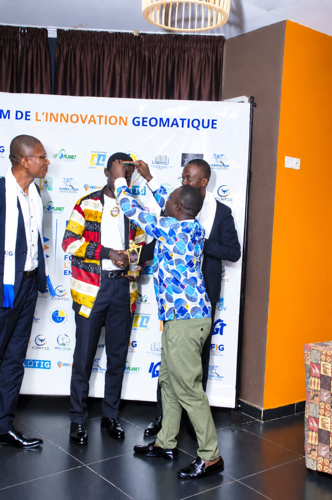
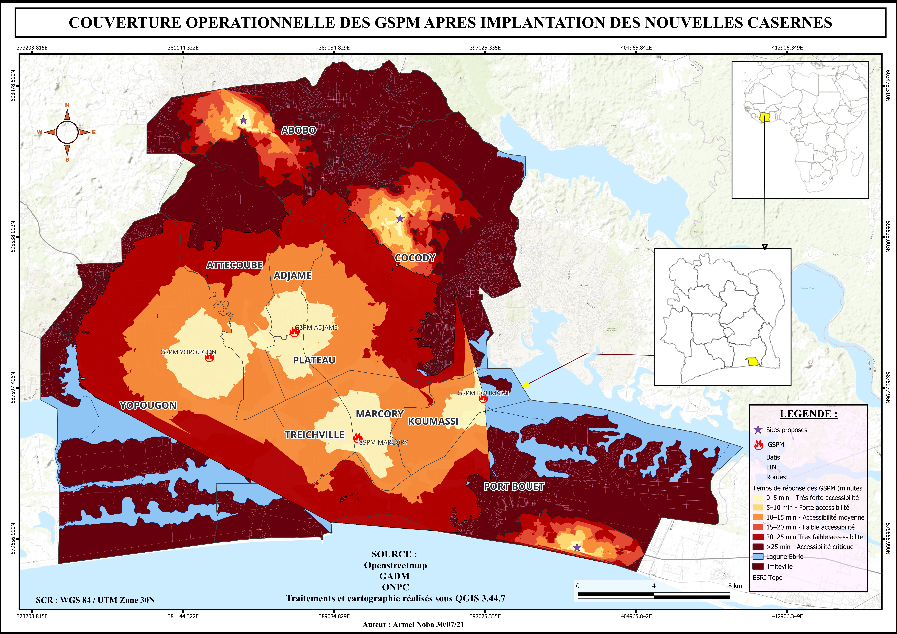
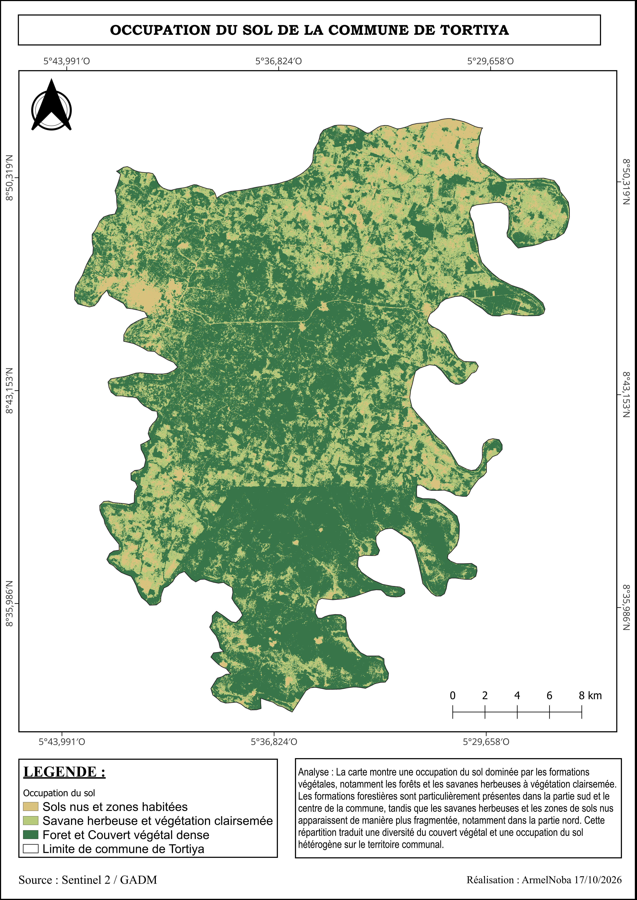
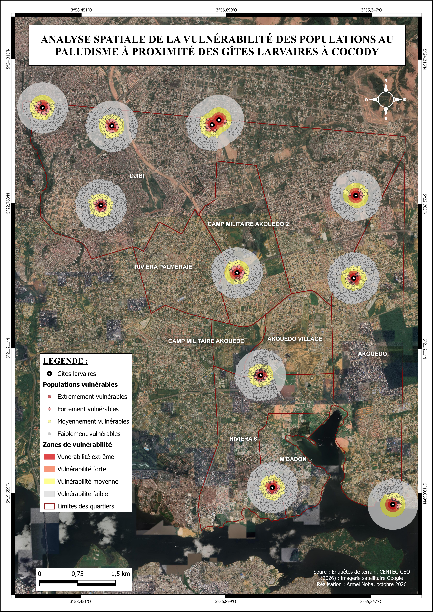

PORTFOLIO GÉOSPATIAL
Bienvenue sur mon portfolio
Découvrez mon profil, mes compétences et mes projets en cartographie et systèmes d'information géographique.
CARTOGRAPHIE · GÉOMATIQUE · SIG
La géomatique
au service des
territoires.
Bienvenue dans mon espace professionnel. Je m'intéresse à la cartographie, aux systèmes d'information géographique et à l'analyse spatiale pour mieux comprendre les territoires et accompagner la prise de décision.
Cartographie
Conception, mise en page et production cartographiques.
SIG & analyse spatiale
QGIS, ArcGIS Pro et analyse des données géographiques.
CartoVision 2026
1er prix au Forum de l’Innovation Géomatique (FIG 2026).
Collecte de données
KoboToolbox, ODK et collecte de données sur le terrain.
PORTFOLIO
Mes projets cartographiques
Découvrez quelques travaux réalisés en cartographie, télédétection et analyse spatiale.
Optimisation de la couverture du GSPM
Analyse de l'accessibilité et des temps de réponse des services de secours dans le District Autonome d'Abidjan.
Occupation du sol à Tortiya
Cartographie des principales classes d'occupation du sol à partir d'images satellitaires et d'une classification non supervisée.
Vulnérabilité au paludisme à Cocody
Analyse spatiale de la vulnérabilité des populations autour des gîtes larvaires dans la commune de Cocody.
Carte interactive
Explorez la zone géographique affichée.
PRÉSENTATION PERSONNELLE
À propos de moi
Noba Noba Armel
Cartographie · Systèmes d'information géographique · Analyse spatiale
Passionné par la cartographie, les systèmes d'information géographique (SIG) et l'analyse spatiale, je m'intéresse à l'exploitation des données géographiques pour mieux comprendre les territoires et accompagner la prise de décision.
Mes compétences portent sur la conception cartographique, le traitement des données spatiales, la télédétection et l'analyse de l'occupation du sol. J'utilise notamment QGIS et ArcGIS Pro pour réaliser des cartes thématiques et conduire des analyses géographiques.
Actuellement en stage à la Direction Générale de l'Administration du Territoire (DGAT), au sein de la Direction du Découpage Administratif et de la Cartographie (DDAC), je contribue aux travaux de traitement et d'exploitation des données géographiques.
DISTINCTION
🏆 Premier prix CartoVision — FIG 2026
Lauréat du premier prix de CartoVision lors du Forum de l'Innovation Géomatique (FIG 2026), grâce à mon projet portant sur l'optimisation de la couverture spatiale et des temps de réponse du Groupement des Sapeurs-Pompiers Militaires (GSPM) dans le District Autonome d'Abidjan.
Cette distinction renforce mon intérêt pour l'utilisation des SIG dans l'analyse spatiale et l'aide à la décision.

Mes principaux outils
Les outils que j'utilise pour la cartographie, l'analyse spatiale et la collecte de données géographiques.
PROJET CARTOGRAPHIQUE · CARTOVISION 2026
Optimisation de la couverture spatiale et des temps de réponse du GSPM dans le District Autonome d'Abidjan
Cette étude porte sur l'analyse de la couverture opérationnelle du Groupement des Sapeurs-Pompiers Militaires (GSPM) dans le District Autonome d'Abidjan après l'implantation de nouvelles casernes. La répartition spatiale des temps de réponse met en évidence une amélioration de l'accessibilité aux secours dans plusieurs secteurs, notamment autour des nouveaux sites proposés à Abobo, Cocody et Port-Bouët. Les zones bénéficiant des temps de réponse les plus courts (0 à 10 minutes) présentent une accessibilité très favorable, tandis que certains secteurs périphériques et éloignés des casernes restent caractérisés par des temps de réponse élevés, supérieurs à 20 minutes. La persistance de ces zones de faible accessibilité souligne les disparités spatiales dans la couverture des secours à l'échelle du District.
L'implantation des nouvelles casernes constitue une stratégie d'amélioration de la couverture opérationnelle du GSPM et de réduction des délais d'intervention. Les secteurs où les temps de réponse demeurent élevés, notamment dans certaines parties d'Abobo, de Yopougon et de Port-Bouët, nécessitent une attention particulière. Il apparaît ainsi essentiel de prioriser les investissements dans les infrastructures de secours, d'optimiser la localisation des futures casernes et de renforcer les moyens opérationnels dans les zones insuffisamment couvertes. Cette démarche contribuerait à réduire les inégalités spatiales d'accès aux secours et à améliorer la capacité de réponse du GSPM face aux urgences.
Objectif du projet
Contribuer à l'amélioration de la couverture spatiale du Groupement des Sapeurs-Pompiers Militaires (GSPM) en identifiant des secteurs prioritaires pour l'implantation de nouveaux sites, à partir de l'analyse des temps d'accès et de la répartition des espaces urbanisés.
Méthodologie et outils
Le travail repose sur l'exploitation des données géographiques, l'analyse des zones accessibles et la représentation cartographique des temps de réponse. Le logiciel QGIS a été utilisé pour réaliser les traitements et produire les cartes d'analyse spatiale.
Carte d'analyse du projet GSPM

class="project-image" style="width: 100%; height: auto; display: block;" >TÉLÉDÉTECTION · ANALYSE SPATIALE
Cartographie de l'occupation du sol dans la commune de Tortiya
Ce projet porte sur l'analyse de l'occupation du sol dans la commune de Tortiya, située dans le nord de la Côte d'Ivoire, dans la région du Hambol. À partir d'images satellitaires Sentinel-2, une classification non supervisée a été réalisée afin d'identifier et de représenter les principales classes d'occupation du sol. La carte met en évidence une prédominance des formations végétales, notamment les savanes herbeuses à végétation clairsemée et les espaces caractérisés par un couvert végétal dense. Les sols nus et les zones habitées apparaissent de manière plus fragmentée au sein du territoire. La répartition spatiale révèle également des variations entre les secteurs de la commune, avec une présence importante du couvert végétal dans les parties centrale et méridionale, tandis que les sols nus et les zones habitées se répartissent en mosaïque, notamment dans les secteurs septentrionaux. Cette organisation traduit une occupation du sol hétérogène à l'échelle communale.
Ces résultats constituent un outil d'aide à la décision pour la gestion du territoire communal. Ils peuvent contribuer à orienter les actions d'aménagement, à identifier les secteurs nécessitant une attention particulière en matière de préservation du couvert végétal et à suivre l'évolution des espaces bâtis et des sols nus. Une comparaison avec des images satellitaires de différentes dates permettrait de détecter les changements d'occupation du sol et d'appuyer une planification territoriale plus durable. Une vérification sur le terrain serait toutefois nécessaire pour confirmer la nature des classes identifiées par la classification non supervisée.
À partir d'images satellitaires, une classification non supervisée a été réalisée afin d'identifier et de représenter les principales classes d'occupation du sol sur le territoire étudié.
Objectif du projet
L'objectif est de produire une représentation cartographique de la répartition spatiale des différentes classes d'occupation du sol, afin de mieux comprendre l'organisation du territoire et les caractéristiques de sa couverture terrestre.
Méthodologie
Le travail repose sur l'exploitation d'images satellitaires et la réalisation d'une classification non supervisée dans QGIS. Les classes obtenues ont ensuite été représentées sous forme cartographique afin de faciliter leur interprétation spatiale.
Résultats et analyse
La carte produite permet de visualiser la distribution spatiale des classes identifiées et de mettre en évidence leur répartition au sein de la commune de Tortiya.
Compétences mobilisées

SANTÉ · ANALYSE SPATIALE
Analyse de la vulnérabilité des populations au paludisme autour des gîtes larvaires dans la commune de Cocody
Ce projet porte sur l'analyse spatiale de la vulnérabilité des populations au paludisme autour des gîtes larvaires dans la commune de Cocody. La répartition spatiale des gîtes larvaires et des zones de vulnérabilité met en évidence plusieurs foyers de forte exposition, notamment dans les secteurs de Djibi, Riviera Palmeraie, Camp militaire Akouédo, Akouédo Village, Riviera 6 et M'Badon. Les zones les plus exposées correspondent principalement aux espaces situés à proximité immédiate des gîtes larvaires, où se concentrent les populations extrêmement et fortement vulnérables. Les secteurs de Djibi et de Riviera Palmeraie présentent plusieurs foyers de vulnérabilité, tandis que les secteurs d'Akouédo et de M'Badon se caractérisent également par la présence de zones de vulnérabilité élevée autour des gîtes identifiés.
Ces résultats soulignent la nécessité de mettre en œuvre des interventions ciblées dans les secteurs les plus exposés. Il s'agit notamment de renforcer les opérations d'identification et de traitement des gîtes larvaires, d'intensifier les actions de sensibilisation des populations aux mesures de prévention du paludisme et de promouvoir l'assainissement des espaces favorables à la prolifération des moustiques. La priorisation des interventions dans les zones de vulnérabilité extrême et forte, notamment à Djibi, Riviera Palmeraie et Akouédo, permettrait d'optimiser les ressources disponibles et de contribuer à la réduction des risques sanitaires liés au paludisme dans la commune de Cocody.
Objectif du projet
Identifier les zones où les populations sont potentiellement exposées au risque de paludisme en fonction de la proximité des gîtes larvaires.
Résultats cartographiques
La carte présente les gîtes larvaires, les populations vulnérables, les zones de vulnérabilité et les limites des quartiers de la commune de Cocody.
Carte de vulnérabilité au paludisme
